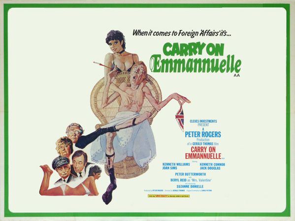
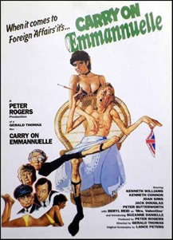

Peter Rogers
Nick White
Emmannuelle Prévert (Suzanne Danielle) relieves the boredom of a flight on Concorde by seducing timid Theodore Valentine (Larry Dann). She returns home to London to surprise her husband, the French ambassador, Émile Prevert (Kenneth Williams) but first surprises the butler, Lyons (Jack Douglas). He removes her coat, only to find that she has left her dress on the aircraft. The chauffeur, Leyland (Kenneth Connor), housekeeper, Mrs Dangle (Joan Sims), and aged boot-boy, Richmond (Peter Butterworth), sense saucy times ahead … and they are right!
Émile is dedicated to his bodybuilding, leaving a sexually frustrated Emmannuelle to find pleasure with everyone from the Lord Chief Justice (Llewellyn Rees) to chat show host, Harold Hump (Henry McGee).
Theodore is spurned by Emmannuelle, who has genuinely forgotten their airborne encounter, and, despite reassurances from his mother (Beryl Reid), exacts revenge by revealing Emmannuelle's antics to the press. However, after a visit to her doctor (Albert Moses), she discovers that she is pregnant and decides to settle down to a faithful marriage with Émile … and dozens of children.
Filming dates: 10 April - 15 May 1978.
Interiors: Pinewood Studios, Buckinghamshire.
Exteriors: (1) Wembley, London. (2) Trafalgar Square, London. (3) Oxford Street, London. (4) London Zoo, London.
The film featured a change in style, becoming more openly sexual. This was highlighted by the implied behaviour of Danielle's character, though she does not bare any more flesh than any other Carry On female lead. These changes brought the film closer to the then popular series of X-rated Confessions... comedies, or indeed the official Emmanuelle films it parodies. This, and Carry On England, were the only films in the series to be certified AA by the British Board of Film Censors, which restricted audiences to those aged 14 and over.
Critical response was, as with Carry on England which preceded it, uniformly negative. Whilst most of the Carry Ons have enjoyed something of a critical renaissance in recent years, opinions of Carry on Emmannuelle and its immediate predecessor have not improved with age. Tom Cole, writing in the Radio Times, found it "undignified" and "laugh-free", noting that Suzanne Danielle's Lolita-esque performance was "unintentionally creepy". And both Cole and Ian Freer, writing for Empire, laid the blame for the death of the series squarely at the film's door.
Philip French - "This relentless sequence of badly-written, badly-timed dirty jokes is surely one of the most morally and aesthetically offensive pictures to emerge from a British studio."
Christopher Tookey - "Embarrassingly feeble."
